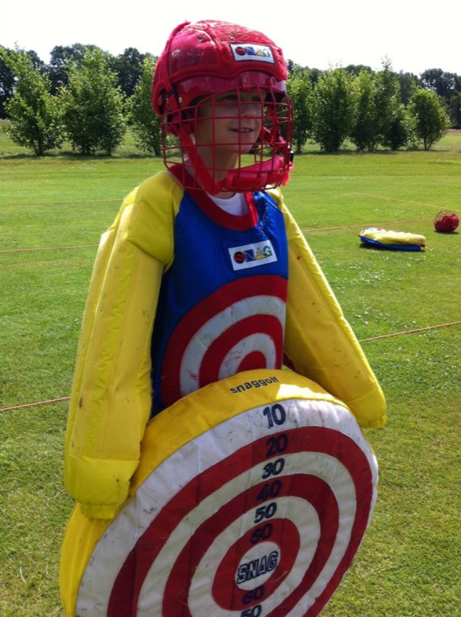
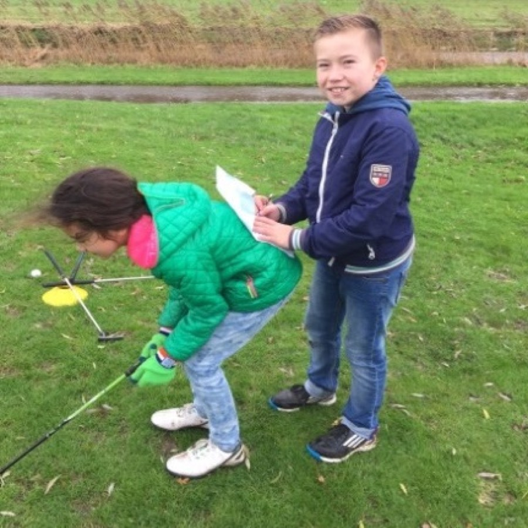

NH Junior
€ 710**
per jaar*!
Lidmaatschap 18 t/m 29 jaar
Jeugd – Algemeen
De jeugdcommissie behartigt de belangen van de jeugdleden van de Noordhollandse Golfclub. Tevens organiseert zij activiteiten voor de jeugdleden en stimuleert overige jeugdigen voor de golfsport. Vanaf 5 jaar ben je van harte welkom als lid of om een keer te komen kijken en mee te doen. In het jeugdplan leest u alles over de mogelijkheden, de professionals, de commissieleden en de activiteiten voor de jeugd.
Golf is een sport die in toenemende mate meer belangstelling geniet. Ook bij de jeugd. De NGF (Nederlandse Golf Federatie / WWW.NGF.NL) stimuleert het golfen onder de jeugd. In de meeste gevallen is golf de tweede sport die door de jeugdige spelers wordt beoefend. Golf is een individuele sport, maar ook een zeer sociale sport. Lessen worden meestal in groepen gegeven. En ook in de baan speel je samen met anderen, meestal voor jezelf en tegen jezelf. En wat is er nou leuker dan straks met je eigen zoon of dochter een rondje te spelen. Waar ook ter wereld?
De gelegenheid bestaat om als jeugdspeler van de Noordhollandse GolfClub mee te doen aan de landelijke NGF-competitie. De criteria om mee te spelen in één van de jeugdteams is in het competitieprotocolopgenomen.

Video: jeugdgolf bij De Noordhollandse GolfClub (YouTube)

Jeugd – Lestijden
De lessen en wedstrijden zijn op zondagochtend tussen 09.00 en 16.00 uur, afhankelijk van de groep waarin uw kind wordt ingedeeld. De indeling vind onder andere plaats op leeftijd en ervaring.
Het seizoen loopt per kalenderjaar, de lessen worden gegeven van maart tot december, met uitzondering van een aantal schoolvakanties.
Voor de wedstrijden ontvangt u per keer een uitnodiging.
Topclass op dinsdag of woensdag van 18:00 tot 19:00
Jeugd – Kosten
Golf staat bekend als een ‘kostbare’ sport. Bij de Noordhollandse GolfClub en Golfbaan Sluispolder worden er echter speciale lage tarieven gehanteerd voor de jeugd. De jeugd heeft immers de toekomst en op deze manier wordt de drempel om voor de golfsport te kiezen aanzienlijk verlaagd. Zo kunnen kinderen al vanaf jonge leeftijd (5 jaar) kennis maken met deze geweldig gave sport!
Voor wat betreft het lidmaatschap van de Noordhollandse GolfClub: wanneer uw kind lid wordt kan het een seizoen lang wekelijks groepslessen volgen bij de PGA professionals en meedoen aan alle jeugdwedstrijden en activiteiten. Bovendien kan uw kind dagelijks gebruik maken van alle oefenfaciliteiten:
Uw kind kan in overleg gedurende het hele seizoen elke week instromen, het tarief wordt uiteraard lager wanneer er al een deel van het seizoen verstreken is. Het seizoen loopt per kalenderjaar, de lessen worden gegeven van maart tot december.
* Het lidmaatschap is inclusief praktijk- en theorielessen, baanbegeleiding, deelname aan wedstrijden op de club, onbeperkt gebruik maken van de par 3 baan en (mits zij in het bezit zijn van een baanpermissie of handicap 54 of lager) van de 18 holes grote baan.

€ 710**
per jaar*!
Lidmaatschap 18 t/m 29 jaar
€ 476**
per jaar*!
Lidmaatschap 11 t/m 17 jaar
€ 460**
per jaar + speelrecht 18 holes-baan*!
Lidmaatschap 5 t/m 10 jaar met baanpermissie of handicapregistratie. Inclusief speelrecht grote baan.
€ 360**
per jaar
Lidmaatschap 5 t/m 10 jaar
*! Tarief is van toepassing op 150 rondes van 9 holes (excl. par-3 baan). Voor meer rondes wordt € 6,00 per 9-holes, tot een maximum van € 325,00, in rekening gebracht.
** Incl. jeugdlessen en andere activiteiten.
Alle tarieven en voorwaarden
Wanneer u meer informatie wilt of u wilt uw kind opgeven voor een proefles kunt u contact opnemen met de golfschool golfschool@sluispolder.nl. U kunt ook bellen met de Noordhollandse GolfClub: (072) 515 68 07.
Club van 100
Onze jeugdopleiding is jaloersmakend voor vele andere golfclubs. Een van de redenen daarvoor is de bijdrage van de Club van 100aan onze jeugdcommissie. De lessen worden grotendeels gefinancierd door de ouders en de club. De Club van 100 neemt de extra’s voor haar rekening.